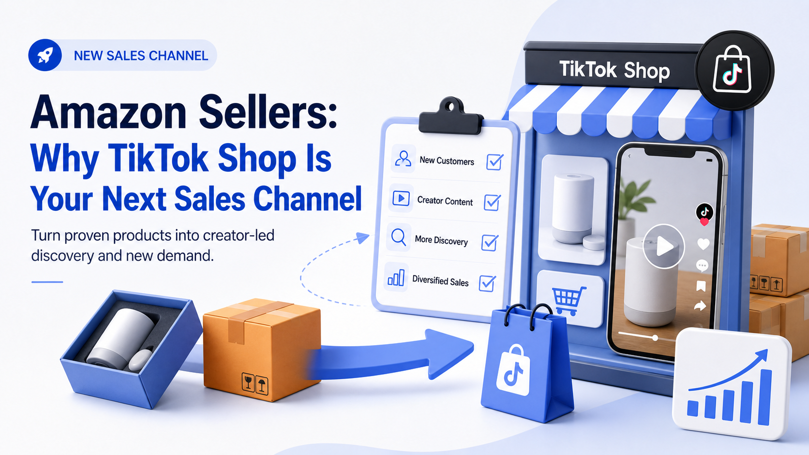

WE Marketing · WEM Blog
Amazon Sellers: Why TikTok Shop Is Your Next Sales Channel

Already selling on Amazon? TikTok Shop can drive new customer discovery, generate content for your Amazon listings, and diversify your revenue. Here's how to start.
- TikTok Shop agency strategy
- Creator affiliate and UGC operations
- Product page, content, and conversion guidance
WE Marketing / WEM 发布 TikTok Shop 代运营、达人联盟、UGC、直播和商品页转化相关实战内容。